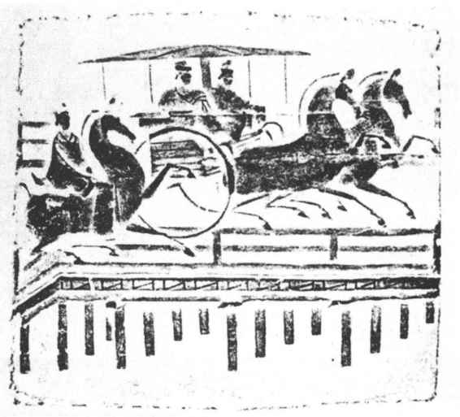
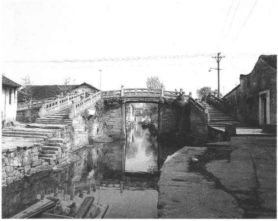
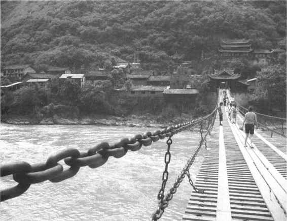
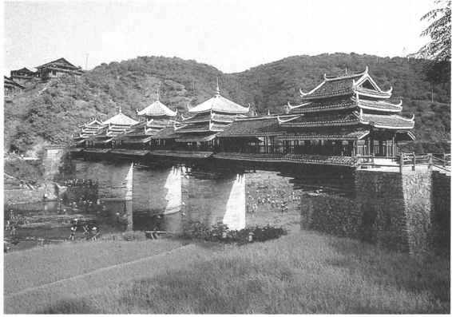

逢山开路，遇水搭桥，这是千百年来人们熟知的一句格言，反映出人类在生活中不畏艰难，奋斗进取的精神。在古老的氏族社会里，人们已经懂得遵循一定规律出门旅行，既首先选择较平坦的路面和最近的途程，其次是在遇到阻碍时能顺利克服。这样，就产生了逢山开路，遇水搭桥的古训。
相对来说，搭桥比开路要困难得多。人们沿着江河两岸行进，很快就会懂得借助水势顺流而下的道理，但在江河上架起桥，则需要有更长的认识过程。远古时期，河流两岸的大树被山洪或飓风摧折而横架在河面上，以及冲击下来的树木拥塞于水面，都可以形成天然桥或浮桥，这种现象为人类在江河上架桥提供了最初的经验。随着多种生产工具的创造，人们用石斧砍倒树木，用石锛、石锯制作各种材料，架桥的技术逐渐提高。金属工具的出现，使人们进一步掌握了跨越江河的本领。中国西南地区山寨，人们很早就知道攀缘藤索过涧渡河的方法，并因之创造了用藤条、竹索等制作吊桥的技术。石板桥和石拱桥的修造，展示了古代交通的进一步发展。大渡河上的铁索桥以及留下美好传说的赵州石桥，是中华民族引以自豪的创造。
中国古代的桥梁建筑虽然千姿百态，但总括起来只有四种：浮桥、梁桥、拱桥和悬桥。另外有一种将梁桥和拱桥结合起来，造型十分注重美观，可在桥上休憩和躲避风雨的“廊桥”，亦称“风雨桥”，在江南也比较普遍的存在，可以归于梁桥。
浮桥是用木板、船只、竹筏等串联在一起，基本上漂浮于水面的一种桥，多铺架在水势较平稳的河流上。有的浮桥规模较大，常常是用船只连接的。浮桥因长期浸泡在水中，所以不十分耐久。在战争的情况下，军队常在行进中在所经江河上架设浮桥。至今仍有一些地方在河流上铺架浮桥。
架设浮桥不必构筑桥墩，无论是用竹筏、木筏、皮筏连接在一起横亘于水面，还是直接用船只连接而成，都必须用篾缆或铁索紧密加固，桥面要铺设木板以利行人和车马通过。
中国的浮桥，最早见于文字记载的是在公元前134年左右，《诗经·大雅·大明》记“亲迎于渭，造舟为梁”，就是指西周文王姬昌为了娶亲，在渭河上用船只架设浮桥的事情。
根据西周初年的礼制，只有天子一人有资格踏浮桥过河，这种专为迎亲的仪仗队伍架设的浮桥，一般老百姓是不能涉足的，他们过河只能乘船只和木筏，所以这时的浮桥往往是一种临时性的建筑物，随建随拆，结构很简单，当时的浮桥自然也少。到了春秋战国时期，因为商业的发展和战争的需要，浮桥才逐渐多了起来。例如秦昭襄王在公元前257年首先将浮桥用于战争，于蒲州（今山西风陵渡）黄河边上调集大量船只，在河上连舟为浮桥以对晋国作战。这种架桥技术很快得到了推广，最初架设浮桥的地方也就成为重要的渡口。秦晋之间的多次战争，都经过蒲津渡，其后西魏、隋、唐各代皆在此连舟为浮桥，仍号“河桥”，直至北宋时犹时坏时复。［8］
因为浮桥多用于军事战争的需要，所以又叫战桥。长江上的第一座浮桥，就是东汉光武帝时为统一四川的战争而架设的，公元35年架于宜昌、宜都之间。宋太祖时，为了讨伐南唐而在长江上又架设了一座浮桥，是公元974年在安徽当涂的采石矶。元世祖忽必烈在进军西南的战争中，先后架设过24座军用浮桥，为统一西南的胜利创造了重要交通条件。
秦汉以后，浮桥渐多。朱雀桁，就是古代秦淮河上的一座著名浮桥，也是重要的渡口。这座浮桥是汉代在今南京市镇淮桥稍东的秦淮河上架设的，三国时称南津桥。因在朱雀门外，东晋成帝咸康年间人们渐称其为朱雀桥或朱雀航，通称“南航”。当时秦淮河上有24座桥，以此桥为最大，长90步，宽6丈，故又称“大航”。每逢战乱年代，有警报则撤掉浮桥为备，是南京城的一个重要门户。隋朝灭陈之后，这座浮桥被毁，此后遂废弃了。
著名的洛阳天津桥，也是一座浮桥，是隋炀帝大业元年（605）用铁锁连接大船建成的，南北勾连，夹路对起四楼，既是浮桥两端的装饰性建筑，也是固定铁锁的地方。天津桥是交通要冲，南来北往的人非常多，在这里发生过不少流传很广的故事。
梁桥是模仿浮桥而建造的，大多在水中和河床两岸建筑石桥墩，然后铺石而成。开始时桥墩用石条或石块叠砌，上大下小，层层挑出，直至墩顶，这样，各墩顶之间的距离便缩短了，铺设石的净跨度亦随时之缩短。不过，这种桥墩由于上面的石材越往上越大，所以桥墩不十分稳固，兼之越往上承受河水的冲击力也越增加，桥墩的各层结构就容易松动，变形和颓倒不可避免。所以后来的桥墩被建成垂直的方柱形，或者下大上小呈锥状体，从而向拱桥过渡。
实际上，梁桥出现在很久以前的远古社会，《说文解字》中解释梁字即“用木跨水，则今之桥也”。最古老的独木桥，也就是最早的梁桥。在西安半坡仰韶文化的氏族营地周围壕堑上，就曾架设过梁桥。
除了独木桥以外，另一种最简单的梁桥是步桥，也叫过水桥或过水明桥，这是在一些水浅的河涧上聚石于水中，使石块露出水面，人们步涉过水的便桥。有些地区缺乏石料，而用烧土块、陶片或苇笆等铺垫于水中成为过水梁桥。这种桥遍布全国山乡，至今仍有很多。
梁桥是各地最常见的桥，种类很多，造型各异，可谓千姿百态。有一种梁柱式桥，以立于水中直柱和架于柱上的横梁结构而成。从出土的东汉画像砖上可以看到这种桥的最早形制：下部为桥柱，柱上有横楣，上面再架梁木，梁木上铺桥，构造美观坚固，桥身平直，桥两端作倾斜约45度的斜坡。（图23—7）山西太原晋祠圣母殿前的鱼沼飞梁，就属于这种类型的桥，从石柱和斗拱的形制看，是宋代的建筑。还有一种木撑架桥，系由伸臂木梁和撑架相结合建筑，如湖南醴陵的渌江桥，始建于宋代，它有五层挑梁，在第四层的顶端加了斜木撑，木撑下端插入桥墩两侧的预制孔里，这就增加了一个承托，减轻了挑梁的受力。类似的桥在浙江与福建东北最多，浙江泰顺县建于明代的叶树阳桥，目前最为古老。

图23-7 成都跳蹬河汉墓车马过桥画像砖
上海青浦县的迎祥桥，始建于元，清代乾隆时重建，是由木、石、砖三种材料建成的梁桥，以砖石柱为桥墩，墩上密排圆形檀木作梁，而以砖铺桥面，并用水磨砖覆贴两边木梁外侧，既保护了木梁，又增加了美感，设计者别具匠心。浙江温州的外墙桥，是典型的漫水梁桥，这种桥多建于水位较低、洪水季节较短、泄水较快的河流之上。洪水来时，任水从桥上漫过，水一退，桥面便露了出来。漫水梁桥的桥身都比较矮，两侧不设栏杆，好让洪水畅通无阻。
古代著名的梁桥有北方的渭水之桥、西安灞桥和南方的泉州洛阳桥等等。渭水之桥是多跨式梁桥。显示了古代桥梁技术的极高水平。据北魏郦道元《水经注》记载，三桥中的中渭桥全长约有五百多米，宽近14米。它由750根木柱组成了67个桥墩，分成68个桥孔，平均每孔跨径近8米，中间一孔跨径9米，便于高大的楼船顺利从桥下通过。唐代重修的东渭桥以青条石砌基，石缝中灌以铁水，揳以松木桩，其规模之大，施工之精，是古代桥梁史上少见的。西安灞桥始建于汉代，历代毁建频繁，现在的灞桥是清宣宗道光十四年（1834）所重建，长近四百米，下立石轴柱四百零八根，桥面为石板铺成，两侧砌筑石拦墙，上有栏杆，以花果鸟兽为雕饰。泉州的洛阳桥为宋代州官蔡襄督工修建，宋仁宗皇祐五年（1053）四月动工，六年的时间才修完。尖锐的桥墩可以分减水势。蔡襄还首创了种养牡蛎于桥墩的方法，用牡蛎的硬壳来联结加固桥墩。
拱桥也是很常见的桥梁形式，但比梁桥要少。为了使两岸的桥墩和中间的桥墩都能支撑更长的桥面，拱桥的建筑方法是在桥墩上面加上斜木，利用三角形的稳定性，形成五边形（不算水面）的桥洞而逐渐演变的。拱桥的桥洞有半圆形、圆形和弯弓形等等，拱圈的数量随着桥的长度而增加，既美观又实用。
河北赵县的安济桥，是中国古代人民的杰出创造。这座桥相传是公元600年后不久由石匠李春负责修造的，全桥长50余米，宽9米，拱圈由28条并列的巨石砌成，上设四个小拱，既减轻重量、节省材料，又便于排洪，增加了美观，它的设计与工艺技术堪称石拱桥的卓越典范。
中国最迟在东汉时期就有拱桥了，在河南新野出土的东汉画像砖上就刻有拱桥的图案：一座单孔拱桥，驷马驰骋其上，马车前还有一个骑马者，桥下有大小船只数艘。这幅画像以清晰的笔法明确表现出当时不仅能建筑拱桥，而且修建拱桥的技术已相当成熟了。
拱桥根据拱券矢跨的比值分为坦拱、陡拱和尖拱等几种形式。坦拱桥的桥面坡度较缓，便于人马车辆通行；陡拱桥的桥洞高敞，利于桥下行舟；尖拱和蛋形尖拱桥多见于园林之中，装饰性较强。
江南水乡常可见到多跨拱桥，即由若干桥拱组成的拱桥，桥孔一般是奇数，罕见偶数。由于桥孔搭配适宜，全桥结构匀称，自然落坡既便于路上的车辆行人过桥，又利于桥下船只往来。（图23—8）多跨拱桥可有十几孔至几十孔者，唐代修建的苏州宝带桥有53孔，徐州的景国桥竟有140孔，可见规模之大了。

图23-8 浙江绍兴始建于南宋宝祐四年的八字桥
有一种拱桥是极为少见的，称做全拱拱桥。它不但上面有拱、下面也有拱，下拱常隐伏于水中，全部拱圈近乎圆形。辽宁凌源县天盛号村的金代石拱桥就是这样的全拱拱桥，上拱是半圆形，下拱为椭圆形。苏州吴县的东美桥，拱圈则为全环形。半个拱圈有水底，通体不用一根桥桩，所谓“一道长虹上下圆”，就是赞美这种拱桥的造型艺术的。
宋代时，山东青州（今益都）首创了一种全木结构的拱桥，又称虹桥、虹梁、飞桥或飞梁。据北宋王辟之《渑水燕谈录》记载，当时青州城被河水分为两部分，连接城市两边的梁柱式桥经常被洪水冲坏，成为全城百姓的大患。宋仁宗明道年间（1032—1033），州官夏竦采用一个狱卒的建议和设计，叠巨石加固两岸，取大木数石相贯连，架为无柱之桥，竟然五十余年未坏。至庆历年间（1041—1048），陈希亮为宿州（今安徽宿县）州官时，大力推广这种木构拱桥，因为宿州是中原通江淮的水陆交通重镇，而跨汴河的梁柱式或因洪水冲地，或因频繁往来的运粮船只碰撞，多次损毁，经常造成船覆人亡。于是陈希亮派人学习青州拱桥的建筑形制，在汴河上架起飞梁，以至“沿汴皆飞桥，为往来之利”。目前，这种木拱飞桥虽然均已无存，但从北宋画家张择端的著名《清明上河图》中，仍可看到对当时都城里汴河上的虹桥精细而逼真的描绘。
宋代以后，桥梁建筑不但讲究实用性，也更加注意了美观。拱券在民间习称为孔、洞，于是各地常可见到三洞桥、五孔桥等美观实用的拱桥。北京颐和园昆明湖上的十七孔桥，是中外闻名的大型联拱桥。
在北京至通州公路旁的通惠河上，横跨着一座古桥，名叫永通桥。这座桥与卢沟桥、朝宗桥并称为拱卫京师的三大桥。永通桥位于通州城西八里，故又叫做八里桥。该桥建于明英宗正统十一年（1446），为三券联拱石桥，中拱高大，两侧拱券较小。桥南北长50米，东西宽16米。桥面两侧护以石栏，立33对望柱，柱顶有须弥座雕狮，神态各异。栏端各有戗栏石兽蹲伏，独角、长鬣、密鳞，昂首挺胸守在桥头。桥孔东西泊岸上有4只镇水石兽各自卧伏于雁翅之上，造型奇特，满身披鳞，后拖长尾，瞪视绿波。据记载，通惠河此处因“每夏秋之交雨水泛滥，常驾木为桥，比舟为梁，数易辄坏”，所以在内官监太监李德的建议下，英宗命另一位太监阮安负责建桥。正统十一年八月开工，十二月即竣工建成，不仅十分坚固，而且颇为秀美，至今五百五十多年仍在使用。
索桥，亦称悬桥、吊桥，在中国西南地区较多。有些学者的研究表明，中国西南地区是世界索桥的发源地。在这一地区西部横断山的怒江、澜沧江、金沙江、雅砻江诸流域河谷地带和川南、川东、贵州、滇东北地区，是西南索桥分布最集中的地区。古代的索桥形式繁多，最简单的是在湍急的江河溪涧上，较狭窄的两岸峭壁间连以藤索，人们手脚并用，攀缘而过。时间耐久些的则是以竹索、铁索横架在两岸石崖上，或在数根长索间铺设木板、竹排，如著名的大渡河上铁索桥即是。索桥的架设，主要是因为水深流急，水中无法修筑桥墩而采取的架桥渡河办法。在长索的两端，需在石岸上用巨大的木桩或钢铁、混凝土为桥墩将索固定。
中国最早的索桥应该在汉代以前就已出现了，四川成都市西南的筰桥在东晋时期便有记载，但这座索桥显然不是最原始的产物。筰桥用竹索编成，又名夷里桥，公元347年，东晋大将桓温曾在这里击败成汉的军队，进入成都，成汉因而灭亡。这座著名的索桥历经南北朝和隋唐，巍然飞渡峡谷之间、急流之上，对西南地区的交通贡献很大。
四川灌县西北，岷江分流的地方曾横跨着中国著名的索桥——珠浦桥，以竹为缆索，以木为桥桩，全长三百余米，因地制宜，十分实用，很受过往行人的欢迎。据《四川通志》记载：“其制两岸椠石为穴，犍石为笼，夹植巨木，屹砥湍流，编竹绳跨江，横阔一丈，离水面五尺，长一百二十丈。”另据《灌县志》记载，珠浦桥在历史上已多次兴废，至清仁宗嘉庆八年（1803）乃仿旧制重新修建，长九十丈，高二丈尺，阔一丈，名叫“安澜桥”。直到1964年随着交通的发展和都江堰水利设施改革的需要，才将古代的竹索改为钢索，把承托竹索的排架木桩改为钢筋混凝土桥桩，桥身亦缩短为240米，使这座千年古桥彻底换了新貌。
在一些少数民族地区，常见一种很简单的索桥，称为“溜索桥”或“溜筒桥”，过桥采用“溜”的方式。彝、藏地区这种索桥的构造是，将竹筒或木筒穿在溜索上，索固定于江河两岸，索下再系一根横木和两股皮绳。渡河时，人骑在横木上，筒挟于腋下，以手攀索，筒随人“溜”而过。如索较平，溜过时只需一根索，索陡则要一来一往两根索，否则从低处向高处无法溜动。过这种索桥十分惊险，稍一不慎，便有跌落深渊的噩运。溜索以川西的茂州和松州分布最集中，贵州境内分布也很多。
四川泸定县大渡河上的泸定桥，是世界上著名的铁索桥，全桥共用13根外径为9厘米的铁链组成，以9根为桥面，上铺木板，左右各以两根铁链为扶手。为减少晃动，桥的两头各有三处用上下两块铁夹板把9根铁链锁住。扶手铁链用吊钩螺丝与最外侧的底索连紧。泸定桥已使用了300年，至今仍担负着繁重的交通任务。（图23—9）现在存世最古老的索桥，是建于唐代的云南塔城关铁索桥。英国在1741年、美国在1796年、法国在1821年、德国和俄国在1824年才各自建造了本国的铁索桥。

图23-9 四川泸定铁索桥
除了浮桥、梁桥、拱桥和索桥外，各地还有一些建筑独特、造型奇异的桥梁，反映出设计师和工匠们高超的技艺和智慧。比如广东潮州市东面的韩江上，横跨着一座古代桥梁——广济桥。这座桥创建于宋代，全长518米，中间有一段用船只连接为浮桥，可以解开，让出航道，成为可分可合的活动桥梁，这是中国桥梁发展史上的一个特殊例子。
还有一种在陆地上凌空架起的桥梁，即天桥，古代也称为“复道”或“阁道”。天桥始建于秦代，骊山旁的阿房宫“覆压三百余里，隔离天日”，期间五步一楼，十步一阁都有构造华美的“复道行空”。《三辅黄图》说，宫中“作阁道至骊山八十里，人行桥上，车行桥下”，可知这座天桥宏大的规模和豪华的气派。
我国长江流域和西南地区、西北和华北的部分地区，有一些木结构楼阁式的风雨桥，又称花桥、回龙桥、廊桥或亭桥。它集桥、廊、亭、塔、楼阁为一体，既实用又美丽。风雨桥是将古代南方的干兰式建筑、汉族宫廷式建筑和江南园林式建筑有机结合、融汇一起的结晶，在建筑史上占有重要的一页。在浙江省武义县的武阳川上，至今仍横卧着一座美丽的风雨桥，状似长廊，两侧有凳。由于历代修缮，现存的是宋代的桥墩，明代的桥身，清代的廊顶。该桥以黛色的远山作为背景，朱红色的桥身饱含千年沧桑，迎送着四海商旅，八方游客。浙江嘉善县的古镇西塘，地处太湖东南的水网地带，河港纵横交错，荡泊星罗棋布，一派江南水乡风光，在春秋战国时期为吴越相争交界处的军事要地。明清时期，西塘镇不仅相当繁华，而且有浓厚的文化氛围。1920年，诗人柳亚子常在西塘吟诗会友，18名西塘文人参加了他创办的南社。至今古镇仍然有104座各代建筑的桥梁，其中有许多廊桥。广西三江县程阳村的林溪河上风雨桥，上面建筑塔形楼亭五座，十分壮美。（图23—10）

图23-10 广西三江程阳村风雨桥
北方人在寒冷的冬季，利用特殊的条件以冰代桥，在古代亦不乏其例，黄河上就曾多次架起冰桥。南宋高宗建炎元年（1127）曾在陕西韩城的禹门外以冰桥渡送官兵。另据《陕西通志》记载，府谷县东30里的天桥峡，每年冬天就靠冰桥过黄河；甘肃皋兰县的镇远黄河浮桥，冬天即拆除，代之以冰桥，冰桥上照样通行车马。
南方的桥梁种类大大超过北方。在浙江的运河地区，有一种主要供纤夫拉纤用的桥，叫纤道桥。这是一种与河流大体平行的岸上桥梁，有的可以长达五六公里，一眼看不到头。绍兴阮社有一座纤道桥称为“百孔官塘”，长三百八十多米，桥墩用条石垒砌，高1.5米，桥底则接近水面，桥面用三行条石拼成，与河岸走向一致，这种桥给挽船的纤夫提供了方便。另外，南方还有一种水闸桥，即在柱、墩间设置水闸以利于两岸农田灌溉的桥梁。这种桥的桥墩两侧设有深槽，必要时则在槽中插上木板，挡住河水，使水不能流过桥下而分流两侧涵洞中，引以灌田，在湖北武昌、浙江钱塘、绍兴、义乌等地都有这种水闸桥。
桥梁是和人类生产、生活密切相关的，一般都建筑在交通要道上，它的发展和人类的文明史有着不可分割的联系。中国的桥梁建筑历史悠久，首创甚多，在世界桥梁史上占有极其重要的地位。从西安半坡新石器时代遗址的壕沟上架起的木桥，到今天武汉、南京上建造的长江大桥，无不聚积着人民无穷无尽的智慧和不怕困难的进取精神。